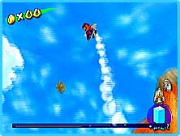
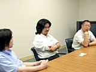
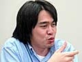

|
| 【N.O.M】今回のマリオは、ボス戦で謎解きがあったり、ゼルダっぽい雰囲気がありませんか。 |
手塚 でも、もともとマリオには謎解きの要素があったんですよ。本当はスーパーファミコンのセルダとマリオを作っていたときは作業が並行していて、お互いにネタを使いあっていたんです。
小泉 ３Ｄ表現を得た時点で、箱庭を作っている面があるので、そういう意味で似ているといわれるのは仕方ないかもしれませんね。 |
| 【N.O.M】ところで、今回ボツになったステージはありますか。 |
臼井 ボツになったノズルのほうがおもしろいですね。あのポンプのデザインも最初はかなりもめました。ヨッシーを頭につけて帽子から水を吐くようにしたらいいんじゃないかとか、マリオが口から水を吐くようにしたらいいんじゃないかとか。一番最初は手にもつ銃も考えたんですけど、アメリカで発売されるときにガンを連想させるといけないんじゃないかとか。
小泉 打ち上げ花火のようなノズルとか、スプリンクラーみたいなノズルとかいっぱいありましたよね。でも、やっぱり全部を入れるのは無理だったんです。爽快なものを残すようにしたんですが、爽快すぎると逆におもしろくなくなるのが難しかったですね。ポンプの水の量や水滴一粒の大きさ、水が飛ぶ距離などは最後の最後まで調整していました。 |
| 【N.O.M】操作性などもかなり調整したんですか。 |
臼井 操作感は宮本がものすごくうるさいですから。
小泉 宮本はほとんどそればかりチェックしていましたよね（笑）。 |
| 【N.O.M】ボタンの割り付けなどはどうでしたか。 |
| 手塚 わりといろいろな仕様を入れながら、そのときにちょうどいいものを割り付けていきましたね。それはどうにでもなるんです。ファミコンの頃は、そういうことを変えるだけでも大変だったんですが。水の出しかたとかもそうで、キューブになると、もう企画サイドで考えたことをすぐに反映できるシステムになっているんですね。これはやはり最近の進化ですよね。 |
| 【N.O.M】ゲームキューブになり映画的な演出も可能になりましたよね。 |
| 小泉 実は制作者のスタイルはあまり変わっていないんです。ただ、やっぱり経験が増えてきているので、スーパーファミコンから64に変わったときよりも、今回のほうがノウハウが活きていますね。例えば何か新しい動きを入れたいと思ったときに、以前だったら検証に２週間かかったところが、いまではすぐに反映できるようになっています。そのスピードは大きかったですね。いろいろなトライができますから。 |